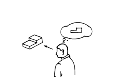

Avaliação de conhecimentos
Questão 1
Quais das alternativas a seguir são vistas ortogonais:
Horizontal, Vertical e Curva
Esquerda, Direita e Pra cima
Frontal, Lateral Direita e Superior
Enviar Resposta
Questão 2
Qual são os tipos de linhas utilizadas para o desenho:
Grossa e curta
Contínua e Tracejada
Longa e fina
Enviar Resposta
Questão 3
Quais os três tipos de perspectivas?
Cônica, cavaleira e isométrica
Lateral, frontal e superior
De cima, de baixo e de lado
Enviar Resposta
Questão 4
Qual a vista que o homem está vendo?

Vendo o modelo de frente
Vendo o modelo de cima
Vendo o modelo de lado
Enviar Resposta
Questão 5
Complete as lacunas:
A projeção ortográfica é uma forma de ____________ objetos tridimensionais em superfícies planas, de modo a transmitir suas ____________com precisão e demostrar sua _____________.
representar formalmente, diferenças, sutil mudança
representar tecnicamente, semelhanças, divergencia geométrica
representar graficamente, características, verdadeira grandeza.
Enviar Resposta
Obrigada por fazer o mini-curso
Seu nível de aproveitamento foi de:
pontos
Baixe aqui o seu certificado!